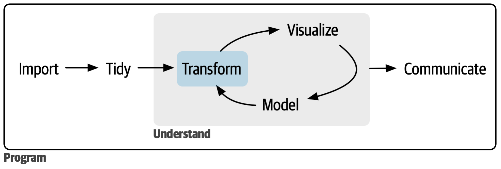
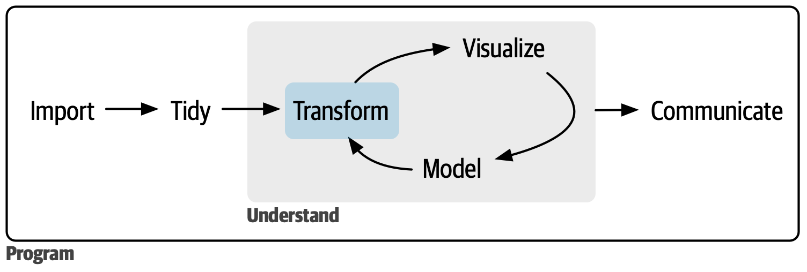

The second part of the book was a deep dive into data visualization. In this part of the book, you’ll learn about the most important types of variables that you’ll encounter inside a data frame and learn the tools you can use to work with them.

You can read these chapters as you need them; they’re designed to be largely standalone so that they can be read out of order.
#chp-logicals teaches you about logical vectors. These are simplest type of vector, but are extremely powerful. You’ll learn how to create them with numeric comparisons, how to combine them with Boolean algebra, how to use them in summaries, and how to use them for condition transformations.
#chp-numbers dives into tools for vectors of numbers, the powerhouse of data science. You’ll learn more about counting and a bunch of important transformation and summary functions.
#chp-strings will give you the tools to work with strings: you’ll slice them, you’ll dice them, and you’ll stick them back together again. This chapter mostly focuses on the stringr package, but you’ll also learn some more tidyr functions devoted to extracting data from strings.
#chp-regexps introduces you to regular expressions, a powerful tool for manipulating strings. This chapter will take you from thinking that a cat walked over your keyboard to reading and writing complex string patterns.
#chp-factors introduces factors: the data type that R uses to store categorical data. You use a factor when variable has a fixed set of possible values, or when you want to use a non-alphabetical ordering of a string.
#chp-datetimes will give you the key tools for working with dates and date-times. Unfortunately, the more you learn about date-times, the more complicated they seem to get, but with the help of the lubridate package, you’ll learn to how to overcome the most common challenges.
#chp-missing-values discusses missing values in depth. We’ve discussed them a couple of times in isolation, but now it’s time to discuss them holistically, helping you come to grips with the difference between implicit and explicit missing values, and how and why you might convert between them.
#chp-joins finishes up this part of the book by giving you tools to join two (or more) data frames together. Learning about joins will force you to grapple with the idea of keys, and think about how you identify each row in a dataset.